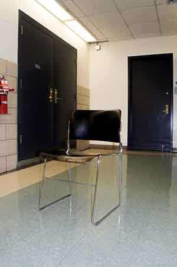

| Before | After |
|
 |
|---|
I chose this images because the light of that image makes it easiler to see the differences I made. I chose this setup because I want to make the photo more brighter while making it look real.
" Back to website "